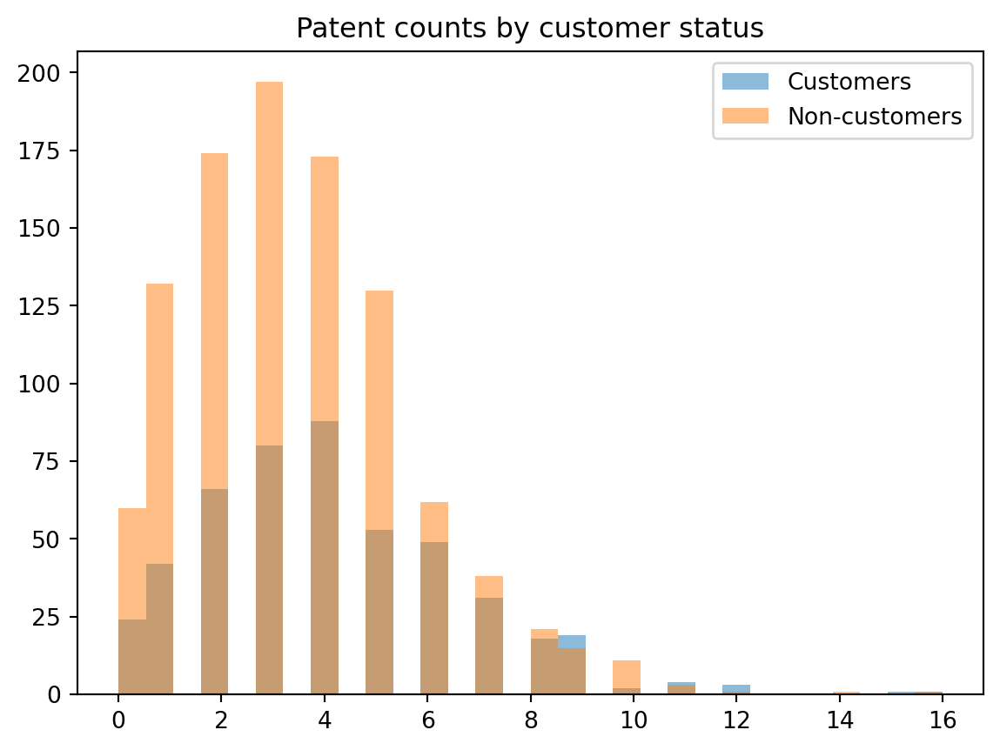
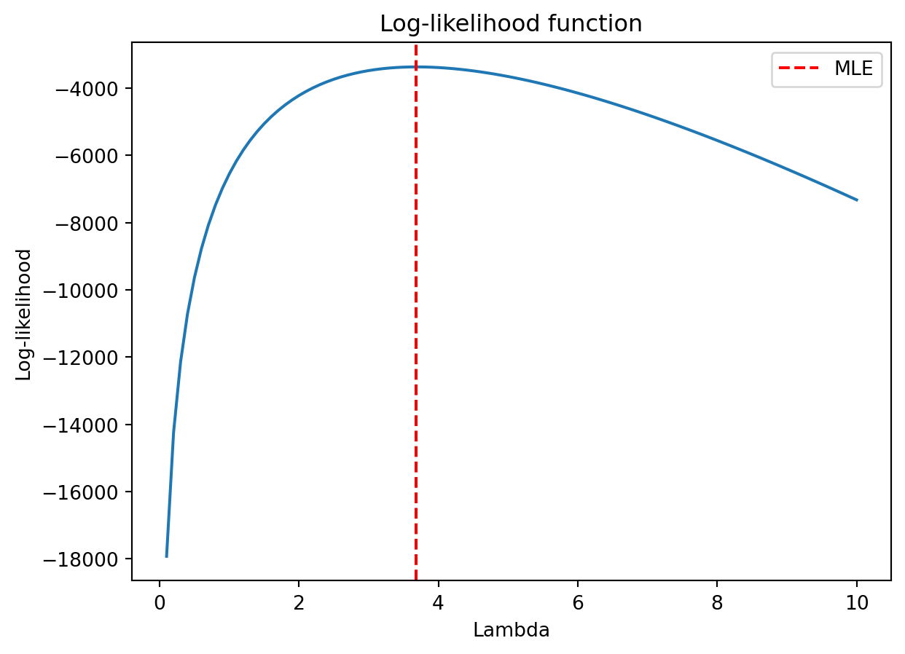

import pandas as pd
import matplotlib.pyplot as plt
df = pd.read_csv("blueprinty.csv")
df.head()| patents | region | age | iscustomer | |
|---|---|---|---|---|
| 0 | 0 | Midwest | 32.5 | 0 |
| 1 | 3 | Southwest | 37.5 | 0 |
| 2 | 4 | Northwest | 27.0 | 1 |
| 3 | 3 | Northeast | 24.5 | 0 |
| 4 | 3 | Southwest | 37.0 | 0 |
A Case Study of Blueprinty’s Software and Patent Awards
Wenwen Zhang
May 13, 2026
Blueprinty is a company that provides software designed to help engineering firms prepare patent applications. The company claims that using its software improves the chances of getting patents approved.
To study this, Blueprinty collected data on 1,500 mature engineering firms. For each firm, we observe the number of patents awarded over the past five years, whether the firm is a Blueprinty customer, as well as information such as firm age and region.
At first glance, it might seem straightforward to compare patent counts between customers and non-customers. However, this comparison is not necessarily causal. Firms that choose to use Blueprinty’s software may already differ in important ways, such as being more experienced or located in more innovative regions. Because of this, any observed difference in patent outcomes may reflect these underlying characteristics rather than the effect of the software itself.
In this post, I use a Poisson model and maximum likelihood estimation (MLE) to analyze the relationship between Blueprinty usage and patent counts, while accounting for the structure of the data.
| patents | region | age | iscustomer | |
|---|---|---|---|---|
| 0 | 0 | Midwest | 32.5 | 0 |
| 1 | 3 | Southwest | 37.5 | 0 |
| 2 | 4 | Northwest | 27.0 | 1 |
| 3 | 3 | Northeast | 24.5 | 0 |
| 4 | 3 | Southwest | 37.0 | 0 |

From the histogram, customers appear to have slightly higher patent counts on average compared to non-customers. However, the two distributions overlap quite a bit, so the difference is not very clear-cut.
This suggests that while there may be a relationship between using Blueprinty and patent outcomes, it is not obvious how large the effect is just from visual inspection.
The outcome variable is a count — the number of patents awarded to each firm over the last five years. Because counts are non-negative integers, a Poisson model is a natural starting point for modeling this type of data.
Assume that each observation follows a Poisson distribution:
\[ Y_i \sim \text{Poisson}(\lambda) \]
The probability mass function is:
\[ P(Y_i = y_i \mid \lambda) = \frac{e^{-\lambda} \lambda^{y_i}}{y_i!} \]
Assuming the observations are independent, the likelihood function is:
\[ L(\lambda) = \prod_{i=1}^{n} \frac{e^{-\lambda} \lambda^{y_i}}{y_i!} \]
Taking logs, the log-likelihood becomes:
\[ \ell(\lambda) = \sum_{i=1}^{n} \left( y_i \log \lambda - \lambda - \log(y_i!) \right) \]
To estimate \(\lambda\), I compute the log-likelihood numerically and find the value that maximizes it.
import numpy as np
from scipy.optimize import minimize
from scipy.special import gammaln
y = df["patents"].values
def neg_log_likelihood(beta):
lam = np.exp(beta[0])
log_lik = np.sum(y * np.log(lam) - lam - gammaln(y + 1))
return -log_lik
result = minimize(neg_log_likelihood, x0=[0])
beta_hat = result.x[0]
lambda_hat = np.exp(beta_hat)
lambda_hatnp.float64(3.6846666635253857)The estimated value of \(\lambda\) is about 3.68. This means that, according to the Poisson model, the average number of patents per firm is around 3.68 over the five-year period.
To check whether this estimate makes sense, we can compare it to the sample mean of the data. Since the Poisson distribution has the property that its mean is equal to \(\lambda\), we expect the MLE estimate to be close to the sample average.
In fact, the estimated value is very close to the sample mean, which suggests that the maximum likelihood estimation is working correctly. This result provides a useful sanity check and confirms that the Poisson model is capturing the overall level of patent activity in the data.
However, this simple model does not yet account for differences between firms, such as whether they are Blueprinty customers or their age and region.
lambdas = np.linspace(0.1, 10, 100)
log_lik_vals = []
for lam in lambdas:
log_lik = np.sum(y * np.log(lam) - lam - gammaln(y + 1))
log_lik_vals.append(log_lik)
plt.plot(lambdas, log_lik_vals)
plt.axvline(lambda_hat, color='red', linestyle='--', label="MLE")
plt.title("Log-likelihood function")
plt.xlabel("Lambda")
plt.ylabel("Log-likelihood")
plt.legend()
plt.show()
The log-likelihood curve reaches its maximum at a value of λ close to 3.7, which matches the estimate obtained from numerical optimization. This provides a visual confirmation that the maximum likelihood estimate corresponds to the value of λ that best fits the observed data.
From the shape of the curve, we can also see that the log-likelihood increases rapidly at first and then gradually decreases, indicating that values of λ far from the optimum provide a much worse fit to the data.
In the previous section, I assumed that all firms share the same expected patent rate \(\lambda\). However, this is a strong assumption, since firms differ in characteristics such as age, region, and whether they use Blueprinty’s software.
To allow for this, I extend the model to a Poisson regression:
\[ Y_i \sim \text{Poisson}(\lambda_i), \quad \text{where} \quad \lambda_i = \exp(X_i \beta) \]
The exponential link function ensures that \(\lambda_i\) is always positive, which is required for a Poisson distribution.
In this model, the expected number of patents depends on firm characteristics, including whether the firm is a Blueprinty customer.
import statsmodels.api as sm
X = df[["iscustomer", "age"]]
X = sm.add_constant(X)
poisson_model = sm.GLM(df["patents"], X, family=sm.families.Poisson()).fit()
summary_table = pd.DataFrame({
"Coefficient": poisson_model.params,
"Std. Error": poisson_model.bse,
"p-value": poisson_model.pvalues
})
summary_table.round(3)| Coefficient | Std. Error | p-value | |
|---|---|---|---|
| const | 1.502 | 0.051 | 0.0 |
| iscustomer | 0.181 | 0.028 | 0.0 |
| age | -0.010 | 0.002 | 0.0 |
The coefficient on iscustomer is positive (about 0.18), which suggests that firms using Blueprinty’s software tend to have higher patent counts compared to non-customers.
Since the model is log-linear, this coefficient can be interpreted in percentage terms. Specifically, exp(0.18) ≈ 1.20, which implies about a 20% increase in expected patent counts.
The coefficient on age is slightly negative (around -0.01), indicating that older firms tend to have slightly fewer patents, although the effect is relatively small in magnitude.
Overall, the results suggest a positive relationship between Blueprinty usage and patent outcomes. However, this should not be interpreted as a causal effect, since firms are not randomly assigned to use the software. The observed difference may reflect underlying differences in firm characteristics rather than the impact of the software itself.
To better understand the effect of Blueprinty’s software, I construct two counterfactual scenarios. In the first scenario, I assume that no firms use the software. In the second, I assume that all firms use it, while keeping all other characteristics fixed.
Using the fitted Poisson model, I predict the expected number of patents for each firm under both scenarios. The average difference between these predictions is about 0.69 patents per firm.
This means that, according to the model, using Blueprinty’s software is associated with an increase of about 0.69 patents over the five-year period.
However, this estimate should be interpreted with caution. Since firms are not randomly assigned to use the software, the observed difference may reflect underlying differences in firm characteristics, such as experience or location, rather than the causal impact of Blueprinty’s product.
In this post, I used a Poisson model and maximum likelihood estimation to analyze the relationship between Blueprinty’s software and patent outcomes.
The results show that firms using Blueprinty’s software tend to have higher patent counts, and the regression analysis suggests about a 20% increase in expected patents. The counterfactual analysis further indicates an average increase of about 0.69 patents per firm over five years.
However, these results should not be interpreted as causal. Since firms are not randomly assigned to use the software, the observed differences may reflect underlying characteristics rather than the effect of Blueprinty’s product itself.
Overall, while the evidence is consistent with Blueprinty’s claim, a stronger research design would be needed to establish a causal relationship.